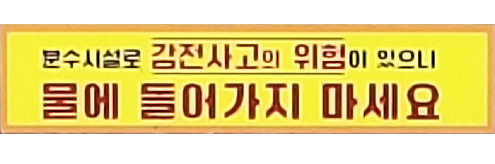

파란색
파란색은 청결한 이미지를 준다. 치과, 보건소, 대학 병원에서도 파란색을 자주 사용하는 걸 우리는 쉽게 볼 수 있다. 마스크도 파란색이 많다. 현대 사람들에게는 청결한 이미지의 색이 된 것이다.
영남대학교의 대표 색상은 채도와 명도가 조금 낮은 편인 파란색이다. 연세대와 고려대의 색상 대립처럼 각 대학들은 상징적인 색상을 가지는 게 일반적이다. 영남대 내부의 많은 안내판들이 이 색상으로 디자인되어 있다.
포카리 스웨트 하면 떠오르는 색은 파란색이다. 이온 음료 광고에서는 특히나 파란색이 자주 사용된다. 청량하고 맑은 이미지를 위해서다. 이온 음료 광고 모델들도 대체로 흑발을 가진 여성 모델이라는 공통점도 있다.
빨간색
중국 하면 가장 먼저 연상되는 색은 무엇인가? 빨간색이다. 중국에서 빨간색은 부, 행복, 사회주의를 상징한다. 그렇기 때문에 선호된다. 또, 중국에서 선호하는 동물 중 유명한 것은 판다다. 이 이름표에선 판다가 사용되었기 때문에 빨간색을 선택했을 것이라 추정한다.

대부분의 주의, 경고 문구가 있는 안내판에는 노란색 그리고 빨간색이 쓰인다. 빨간색이 위험 신호로 사용하는 이유는 파동주파수 때문이다. 빨간색은 빛의 파동주파수의 파장이 길고 보라색으로 갈 수록 짧아진다. 효과적인 사용을 위해 선택된 것이다.
위에서 언급한 것과 같이 빨간 계열이 쓰였다.

위에서 언급한 것과 같이 빨간 계열이 쓰였다.
보색 대비
보색 대비란 색상환에서 반대되는 색상끼리 배색되었을 때 얻어지는 조화를 말한다. 어떤 색을 그 색의 보색과 조합시키면 본래의 색보다도 채도가 서로 높아지고 선명해지면서 서로 상대방의 색을 강하게 드러나 보이게 한다.
이 표지판에서 사용된 레몬색과 푸른색은 서로 보색 대비가 되는 관계다. 그래서 각 색상이 더욱 돋보이고 글자들도 더 쉽게 읽힌다.

피자 가게의 포스터다. 여기서는 빨간색과 초록색을 사용하여 보색 대비를 주었다.

학교 수풀 사이에 있는 소화전이 인상깊게 눈에 들어온다. 이것 또한 보색 대비가 되어 빨간색이 더 선명하게 인식되는 것이다.